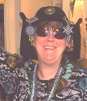

Here is presented testimony by several persons with very different outlooks on their relationship with Jon Lackey. I act as commentator, until my own testimony at the end of this piece (followed by anyone who wishes to comment on my testimony).
Testimony - Bon Callahan
 1970: I, a member of the Mythopoeic Society, joined Glen Goodknight in his visiting of homes which would welcome our outreach charter meetings - new buds of the Mythopoeic growths: Glen's proudly emerging discussion groups, branches from his treelet
At the home of Chris Barczak, we meet a clowder of eager readers, freshly present. Glen arrived to preside,I at his side. Jon, so very tall, so very self possessed, so thespian, much history at his back, will serve as our moderator, maven, manager.
Much more magic to come. We created, danced, recited, learned, under his purview in an empty warehouse filled with vinyl encoded with rare music.
Not all went well, we drifted apart by 1976
1986: Later reunited, I learned so much more from his world to mine. He had kept sharing with everyone except himself, a monk in his own world of fine tea and chaos. Mildly broke his arse, but not a sweat, to share so very much with us plebeian witnesses, paradox of selfish giving.
He was on the graphics team that designed Irwindale. He strove to enter Hollywood - his Creeping Terror construct was ripped off, a travesty left to rot on the back porch of monster filmography - must have sucked.
2006: Jon fell direly ill, would not admit it, so like him. My sisters of choice who had joined his circle, both therapists knew the ropes, said to send a social worker to him. After the stonewalling, the stones tumbled. He was hospitalized with terminal kidney cancer - no family there to assist. Only 69, had many years to live and give above and beyond the darker traits.
We tried to guide him to his leaving of this world, deserving or not, we were all he had for the final drawing of the curtain.
later found remaining family, we were shut out.
He was clayfooted, no idol, giving yet not, enigma of a human. Jon hurt allies, lovers, friends, affirmed opinions of enemies - but left a powerful presence on all points of the human compass.
Comment - Andrew Grygus
Bon's paragraph mentioning The Creeping Terror deserves considerable expansion and elucidation. This I provide on the page The Creeping Terror.
Testimony - Tim Callahan
Jon, one of the earliest members of the "Chesley Donovan Foundation" was a person of maddening eccentricities. Despite being a brilliant artist and one of the designers of the city of Irvine, California, he lived much of his life, and finally died in a state of poverty. To some degree he seemed to cherish a "starving artist" lifestyle.
Jon also seemed to have a sense of entitlement, and left this world owing many people considerable amounts of back rent. He did pay the Callahans with sculptures they collected when he died. These works remain an exquisite testimony to his artistic brilliance.
Jon had an excessive need to control the "Music Group". As an example of this, on one occasion, when the Callahans were hosting the music gathering in the winter, even though much weakened, he completely undid and re-laid the fire Tim Callahan had already effectively laid.
Another aspect of his need to control the group was his penchant for turning the volume of the music being played up to a point that it hurt one's ears in order to force idle conversations to cease.
His need to control and dominate relationships ruined his relationship with Katrelya Angus, whom he deliberately estranged by comparing her unfavorably with two women of his acquaintance with whom he claimed to have had previous liaisons. In fact, these affairs were entirely fictional. The two women in question had been friends of his but never lovers.
He also bore what seems to have been a totally unreasonable animus toward Andrew Grygus, whom he banned from the music gatherings for several years.
Comment - Andrew Grygus
That banishment was for about 30 years. The whole silly story can be found here: Banished from CD. Jon jealously guarded the invitation list, but I still attended a few events, invited by Tom Slover and Peggy Myron when they were in town.
Testimony - Mallory & McCall
This was an actual published obituary, so it's a bit whitewashed. Mallory & McCall were for some time hosting Music Group events, at least one of which I attended. They told me years later that they had stopped hosting because they felt Jon was just using them, without credit or appreciation.
Jon Lackey
Memorial to a true Renaissance Man. 1937-2007
To those of you who were fairegoers or SCA members in the last 30 or so years in Southern California area, you may well recall the tall, slender, imposing figure of Jon Lackey, musician (recorder and wire strung Irish harp at the faires), artist, street theater and court pageantry innovator, director, photographer and long time friend to Mallory & McCall.
Jon died of cancer on February 26, 2007. A free spirit who lived out of the mainstream, he refused help until the very end, not really realizing or admitting how sick he was. He died in his sleep.
Jon was an early member of the Chesley Donovan Foundation. He branched from it to form a group dedicated to early and "classical" music. They continue to meet, now under the direction of Bonnie Callahan, in various member's homes, listen to recorded music of a selected composer and enjoy intelligent conversation. Who will forget the respect Jon taught us for the correct brewing of exotic teas? The many people that he mentored in numerous ways through the years have long respected and appreciated his care.
Jon often played recorder with Mallory & McCall during our Renaissance, Irish, and even Pirate incarnations, although he was a rebel, but not a pirate at heart. He helped stage our fantasy wedding in the early 1970s when the very idea was new to us and all our friends. He acted with our Janus Company Radio Theater on KPFK in Los Angeles, as well, on and off for over 14 years. He also wrote an article and did many of the photographs for our book published by Mel Bay, Exploring the Folk Harp.
Many recall the events he staged for the Mythopoeic Society. When we staged hand hosted several of the Witchcraft and Sorcery Magazine Convention's "Queen Witch and King Sorcery" contests in the early '70s, he'd cheerfully hide for hours in his fiberglass coffin, to rise up on cue, terrorizing the hotel management with his smoke effect! If only...
To his amusement, he is probably best known for having created the monster for the D horror flick "The Creeping Terror", a cult classic. He also made several appearances on the old "Steve Allen Show" when it was on Vine Street in Hollywood, usually playing some kind of crazy expert on torture devices.
Jon was a man of multitude talents. His vast creativity, intelligence, and most of all, hose friendship will be sorely missed.
Above text © Mallory & McCall.
Testimony - Andrew Grygus
Jon was an artist of talent, a very intelligent, intellectual, and well read person, and a person of great ambitions. He also had some very severe personality flaws which subverted his ambitions.
Jon could have benefited greatly from what the Witches call "Shadow Work", an intensive exploration of your own being, specifically the negative features, failings, and hurtfulness to others, with the objective of resolution. Many Witches call upon goddess Hekate (say Hekatee) with her torches to bring light to this darkness. I assure you, Jon would never imagine calling upon a goddess for help, and, unfortunately, he considered what others saw as flaws to be "features, not bugs".
I met Jon around 1959, though the exact sequence of introductions I don't currently remember. At this time he lived in the rooms above the Elysian Theater on Riverside Drive in Los Angeles. The theater had been long closed. The main theater part was stripped of its seating and used by some war surplus outfit to store piles of stuff they weren't really able to sell. We referred to it as "The Mine".
I was five years younger than Jon, and considered him a friend, though I always kept him at some distance. He would often come around to the apartments in Burbank, where I lived with my mother and younger (by about 1-1/2 years) brother, Ron.
At the time, Jon drove a Jeep of the WWII surplus sort. He was very tall, very thin, and wore his hair and beard exactly like in the portraits of Jesus that hung in every elementary school classroom in those days. His speech had an odd cadence, with pauses and bursts and frequent "uums" and "errs". Ron was certainly not one taken by Jon's developing charisma - his name for Jon was "The Jesus Jeep Creep".
Jon was a very early member of the Chesley Donavan Foundation, but not a founder. He came in some time after Paul Shoemaker arrived. Certainly he must have contributed some to the legends of the Donavanians, but the light hearted humor and casual absurdity of those stories conflicted with Jon's tendencies to seriousness and solemnity. These attitudes were in keeping with Ron Cobb and Paul Shoemaker, who continued writing on the subject many years later, but the stories were not much mentioned by Jon during my membership.
When I first became involved with the Foundation, it was holding meetings in Helen Urban's garage, and connections with Science Fiction fandom were still quite clear. Ron Cobb was no longer attending, nor was Tad Duke. The organization was run by Paul Shoemaker (later known also as Harold Moss), Jon Lackey, and Helen Urban. Helen was not in good health, so the meetings were soon moved into Jon Lackey's digs. By this time, the group's involvement in Science Fiction fandom had seriously faded.
Jon supported himself during most of his life with temporary jobs involving drafting, illustrating and technical writing, but was most of the time unemployed and impoverished. Years before, he had studied at the then famous Chouinard Art Institute, but I don't think he graduated. It matters little, what he was learning then was going obsolete even as he studied, but Jon adapted the skills to other uses.
Aside from massive amounts of tea, Jon survived on rice. He would boil it with a lot of spices so it was practically a rice curry. It wasn't bad, but I never saw him cook anything else. He also had a huge jar of honey, which he had stolen from a cafeteria somewhere. He didn't use much of it, but put it out for guests. It was so old the honey was black. I would tell people it was honey made by bees from the flowers of the asphalt plant.
Jon was already a hoarder. His hoarding was enhanced by the fact that he considered anything that was not watched or locked down after 1 AM to be his. He had thus acquired a lot of "useful" stuff, including 5 or 6 large cardboard cylinders of a black tar-like substance. These followed him through several moves, but he never found a use for them.
There was also the Atzanzi, a large construction of chicken wire and hemp fiber that the CD folks had brought to a Science Fiction convention some years before. By my time, participation in Science Fiction fandom was long in the past, but the Atzanzi was still there, gathering dust.
I am very familiar with Jon's growing hoard, because every once in a while I had to help him move it from one place to another. It was incredible how far behind on rent his landlords allowed him to get before they finally demanded he leave - that charisma thing again.
There were a lot of moves. From the theater, it was to a run-down industrial building, then to an abandoned church, then to an abandoned drug store, then to various homes in run-down neighborhoods. He was often stealing water from neighbors because his utilities were turned off.
In any case, wherever he was, Jon held weekly CD get togethers, which were slowly evolving into what he eventually called "The Music Group".
At the time Jon was living in the abandoned church, Jackie became his girlfriend. She was a lot younger than he. They probably met through her parents, who were quite under the spell of Jon's charisma. I overheard them saying it was so nice that their daughter had taken up with someone they completely approved of - but Jackie soon left for college.
On a day when I and Ron Myron were visiting Jon, he was using the typewriter. He said he was writing a letter to Jackie. Ron and I both agreed, and suggested to Jon that in writing to a girlfriend, handwriting would be more appropriate than a typewriter.
Jon reacted to this suggestion with such outrage that Ron and I immediately left his home. This was a turning point. Going forward, Jon now treated us both with open disdain, rather than his customary condescension. Ron had already drifted away from the CD group, but I continued to attended meetings until my banishment. I no longer visited Jon outside these events. Jackie died of medical complications a few months after this event.
Around 1970 Jon became involved with the Mythopoeic Society, and this is described in Testimonies above. As an associate of Jon's with some technical skills, I became involved with some activities, though I was very peripheral to the group and never attended any of their literary discussions. I was, however, involved in one of Jon's early stage productions with the group, The Greater Trumps. It did not go so well, and I never became involved with any of Jon's further projects.
Jon also liked to organize camping trips, particularly to Calico and Red Rock Canyon. These were usually timed by the astronomical dates of Perihelion and Aphelion, which had been established by Paul Shoemaker for mock religious ceremonies. Jon was a hard core atheist, and the Pagan revival had yet to begin in earnest, so everyone accepted this mockery. Paul eventually became a serious priest of the Khemetic (ancient Egyptian) religion and a founder of the Church of the Eternal Source.
Jon increasingly considered me to be a threat to his total dominance of the group, now that Paul and Helen were both gone. I had fomented a couple of revolts within the CD organization, and a lot of attendees were friends of mine. He missed no opportunity to denigrate me as totally devoid of artistic, musical, or literary talent or ability.
When I built my concrete boat, I had a bunch of people over, including Jon, to help me turn the hull upright. I heard Jon tell people looking at the hull, "How could he create something with such beautiful curves".
I continued to attend CD meetings and some of Jon's events, until the fateful day, probably in 1973, when it all blew up, when I hurt Jon's tender ego beyond his ability to tolerate. This story is explained in detail on the page Banished from CD. People tend to presume this banishment caused me to have considerable animosity toward Jon, but this is not actually the case. I had plenty else to do in those days.
After banishment, I still attended a few Music Group events. When Tom and Peggy were in town from their world traveling, they would invite me along, as they were still on Jon's list. Jon couldn't throw me out, because they were now always at someone else's home. He couldn't host because it's hard to hold a recorded music event when all your utilities are turned off. I was always cordial, and he was always "Haruuumph!".
During this time, people were giving Jon commissions for artwork, just to keep him alive, and not because they actually expected delivery. Jon's artworks always needed "just a little more work" before he was satisfied they were done. Often they were barely started, then abandoned for years.
When his parents died, Jon inherited enough money for a trip to England. I think Tom and Peggy were there at the time. This was a very important trip for Jon, due to his enthusiasm for the Tolkein stories, early English, Irish, and Scottish music, and English Renaissance re-enactments
There was also the "Katrelia matter". I had met Katrelia once at a Music Group event at Mallory & McCall's, but the relationship between Jon and Katrelia happened during my long banishment. When I returned to the group, Katrelia was still seriously on the outs with Bon and Tim for encouraging her to get into the relationship. I don't remember how we got in contact, but she considered me to be another of Jon's victims. Jon never had enough leverage over me to make me a victim, but having this association with Katrelia made it possible for me to aid in getting her reconciled with Bon and Tim.
Interestingly, in Jon's writings, apparently in 1973, there are two pages listing all the qualities desired of a woman to be his companion. Katrelia fit that specification like it was written for her. There was also another page, dated Mar 1973, titled "How to Please a Woman".
It is ironic that when the woman came along, Jon's personality made it totally impossible for him to handle the situation. He simply could not share authority within his household with another person. While Katrelia remained devoted to Jon, he soon became mentally abusive. He told Dana Downy he really needed to drive her away. Finally he became physically abusive, causing injury, and that is when she left. She still holds considerable bitterness toward Jon for the disruption he caused in her life.
Jon died of kidney cancer in February of 2007. Within a few weeks I was invited back to the CD / Music Group events. I did not know the people attending at that time, except Lee Winters, whom I had introduced to the group in the late 1960's. I presume Tom and Peggy told Bon to invite me. The first event I attended was 17 March 2007, and the first event I hosted was April 2007.
A Final Note: I have been composing the history of the Chesley Donavan Foundation and the Music Group. I got agreement with the most senior members to rename the group Musica Donavania, in honor of it's origins. The Musica Donavania pages have been incorporated into my Clovegarden.com Website. See History of Musica Donavania and also Musica Donavania Past Events which has a lot of photos taken at events.
If there is consciousness after death, Jon's ashes should be smoldering over how so much of his legacy now depends on the hated Me for continuation. Actually, he wouldn't notice. He was such a committed atheist materialist, he'd still be busy denying there was consciousness after death.